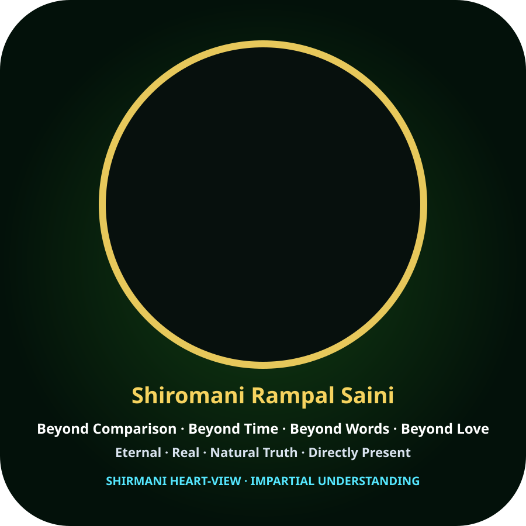

Voice → Voice System → Content → Visual → Live Presentation
एक production-ready browser subsystem foundation: voice input/output, context-aware response presentation, visual identity, timing coordination और lip-sync presentation boundary.
Four-Layer Presentation Pipeline
Listen / Speak
Microphone input और browser speech output के लिए capability detection. User permission के बिना microphone access नहीं।
BROWSER CAPABILITYAuthorized Adapter
Voice provider को एक explicit adapter boundary में रखा जाता है ताकि authorized credentials, consent और provider policy अलग रहें।
ADAPTER BOUNDARYContext → Response
उत्तर के साथ source/evidence state, uncertainty और product context को presentation layer तक पहुँचाया जाता है।
CONTENT CONTRACTFace / Timing
Visual identity, speech timing और mouth animation को एक presentation clock में बाँधा जाता है। Full phoneme-level lip-sync के लिए dedicated audiovisual model/asset adapter अलग रहेगा।
LIVE PRESENTATIONLive Voice Demonstrator

Ready. Browser speech synthesis capability will be detected locally.
Communication Contract
Simple • Natural • Transparent
स्पष्ट भाषा, respectful tone और किसी व्यक्ति, जाति, धर्म, मज़हब या संगठन को नीचा दिखाए बिना संवाद।
Evidence-aware answers
Evidence available: source + answer. Evidence insufficient: “अभी पर्याप्त प्रमाण उपलब्ध नहीं है।”
Identity boundary
दर्शन/पहचान statements को author-declared material की तरह प्रस्तुत किया जा सकता है; उन्हें स्वतः independently verified scientific fact नहीं माना जाएगा।
Production / QC Contract
INSTITUTE → FACTORY → QC → SHOWROOM / SALE
हर concrete presentation asset को Product ID, version, QC state और dispatch state से जोड़ा जा सकता है। Workflow success को product quality का substitute नहीं माना जाता।
Next Production Hooks
- Authorized voice-provider adapter
- Streaming speech-to-text / text-to-speech adapter
- Response context + source metadata contract
- Phoneme/viseme timeline adapter
- Avatar/video render adapter
- Live session telemetry + customer feedback loop